Chapter 23: Urogenital System Infections¶
Introduction¶
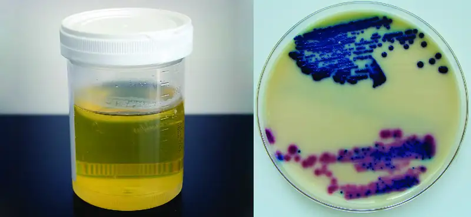
The urogenital system is a combination of the urinary tract and reproductive system. Because both systems are open to the external environment, they are prone to infections. Some infections are introduced from outside, whereas others result from imbalances in the microbiota of the urogenital tract.
Urinary tract infections (UTIs) are one the most common bacterial infections worldwide, affecting over 100 million people each year. During 2007 in the United States, doctor office visits for UTIs exceeded 10 million, and an additional 2–3 million emergency department visits were attributed to UTIs. Sexually transmitted infections (STIs) also primarily affect the urogenital system and are an important cause of patient morbidity. The Centers for Disease Control and Prevention (CDC) estimates that there are approximately 20 million new cases of reportable STIs annually in the United States, half of which occur in people aged 15–24 years old. When STIs spread to the reproductive organs, they can be associated with severe morbidity and loss of fertility.
Because males and females have different urogenital anatomy, urogenital infections may affect males and females differently. In this chapter, we will discuss the various microbes that cause urogenital disease and the factors that contribute to their pathogenicity.
23.1 Anatomy and Normal Microbiota of the Urogenital Tract¶
Learning Objectives
By the end of this section, you will be able to:
- Compare the anatomy, function, and normal microbiota associated with the male and female urogenital systems
- Explain how microorganisms, in general, overcome the defenses of the urogenital system to cause infection
- Name, describe, and differentiate between general signs and symptoms associated with infections of the urogenital tract
Clinical Focus: Part 1
Nadia is a newly married 26-year-old graduate student in economics. Recently she has been experiencing an unusual vaginal discharge, as well as some itching and discomfort. Since she is due for her annual physical exam, she makes an appointment with her doctor hoping that her symptoms can be quickly treated. However, she worries that she may have some sort of sexually transmitted infection (STI). Although she is now in a monogamous relationship, she is not fully certain of her spouse’s sexual history and she is reluctant to ask him about it.
At her checkup, Nadia describes her symptoms to her primary care physician and, somewhat awkwardly, explains why she thinks she might have an STI. Nadia’s doctor reassures her that she regularly sees patients with similar concerns and encourages her to be fully transparent about her symptoms because some STIs can have serious complications if left untreated. After some further questioning, the doctor takes samples of Nadia’s blood, urine, and vaginal discharge to be sent to the lab for testing.
- What are some possible causes of Nadia’s symptoms?
- Why does the doctor take so many different samples?
Jump to the next Clinical Focus box.
The urinary system filters blood, excretes wastes, and maintains an appropriate electrolyte and water balance. The reproductive system is responsible for the production of gametes and participates in conception and, in females, development of offspring. Due to their proximity and overlap, these systems are often studied together and referred to as the urogenital system (or genitourinary system).
Anatomy of the Urinary Tract¶
The basic structures of the urinary tract are common in males and females. However, there are unique locations for these structures in females and males, and there is a significant amount of overlap between the urinary and genital structures in males. Figure 23.2 illustrates the urinary anatomy common to females and males.
The kidneys carry out the urinary system’s primary functions of filtering the blood and maintaining water and electrolyte balance. The kidneys are composed of millions of filtration units called nephrons. Each nephron is in intimate contact with blood through a specialized capillary bed called the glomerulus (plural glomeruli). Fluids, electrolytes, and molecules from the blood pass from the glomerulus into the nephron, creating the filtrate that becomes urine (Figure 23.3). Urine that collects in each kidney empties through a ureter and drains to the urinary bladder, which stores urine. Urine is released from the bladder to the urethra, which transports it to be excreted from the body through the urinary meatus, the opening of the urethra.
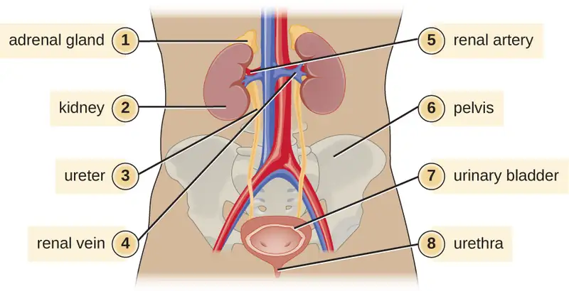
![A cross section of a kidney a solid out regions outlines triangular regions labeled lobes. A tubes beginning at the points of each lobe fuse into a single large tube labeled ureter. A close-up of a lobe showing two nephrons feeding into the tube that feeds into the ureter. Nephrons have a bulb at one end labeled glomerulus. This becomes a tube labeled proximal convoluted tubule which becomes the loop of Henle which becomes the distal convoluted tubule which feeds into the collecting duct. From here urine flows to the renal papilla and ureter. Afferent arterioles feed into the glomerulus and efferent arterioles take materials away from the glomerulus. The venule carries blood away.](img/osc-microbio-23-01-nephron.webp)
Anatomy of the Reproductive System¶
The male reproductive system (Figure 23.4) is located in close proximity to the urinary system, and the urethra is part of both systems. The testes are responsible for the production of sperm. The epididymis is a coiled tube that collects sperm from the testes and passes it on to the vas deferens. The epididymis is also the site of sperm maturation after they leave the testes. The seminal vesicles and prostate are accessory glands that produce fluid that supports sperm. During ejaculation, the vas deferens releases this mixture of fluid and sperm, called semen, into the urethra, which extends to the end of the penis.
The female reproductive system is located near the urinary system (Figure 23.4). The external genitalia (vulva) in females open to the vagina, a muscular passageway that connects to the cervix. The cervix is the lower part of the uterus (the organ where a fertilized egg will implant and develop). The cervix is a common site of infection, especially for viruses that may lead to cervical cancer. The uterus leads to the fallopian tubes and eventually to the ovaries. Ovaries are the site of ova (egg) production, as well as the site of estrogen and progesterone production that are involved in maturation and maintenance of reproductive organs, preparation of the uterus for pregnancy, and regulation of the menstrual cycle.
![A longitudinal section of the female reproductive and urinary systems. A tube labeled ureter leads to the urinary bladder which leads to the urethra. The urinary bladder sits just internal to the pubic bone. Just above and behind the urinary bladder is the uterus (an oval shaped structure with a thick wall). Above the uterus is a tube labeled fallopian tube which connects to a small oval ovary. The opening in the uterus is the cervix which leads to the vagina. Behhind this is the rectum which leads to the anus. The external flaps of skin are labeled labium minora and majora. A longitudinal section of the male reproductive and urinary system. A tube at the top is labeled ureter which connects to the urinary bladder, which sits just behind the pubic bone. The bladder leads to a long tube labeled urethra which is in the center of the penis. The vas deferens also feeds into the urethra. The testis has a structure on the top called epididymis which becomes the vas deferens. The seminal vesicles connect to the vas deferens just before it goes through the prostate gland (a structure just below the urinary bladder). The vas deferens connects to the urethra after it passes through the prostate gland. The rectum and anus are behind all of these structures.](img/osc-microbio-23-01-reprodanat.webp)
Check Your Understanding
- What are the major structures of the urinary system, starting where urine is formed?
- What structure in males is shared by the reproductive and the urinary systems?
Normal Microbiota of the Urogenital System¶
The normal microbiota of different body sites provides an important nonspecific defense against infectious diseases (see Physical Defenses), and the urogenital tract is no exception. However, the kidneys are sterile. Although urine does contain some antibacterial components, bacteria will grow in urine left out at room temperature. Therefore, it is primarily the flushing action that keeps the ureters and bladder free of microbes.
Below the bladder, the normal microbiota of the male urogenital system is found primarily within the distal urethra and includes bacterial species that are commonly associated with the skin microbiota. In females, the normal microbiota is found within the distal one third of the urethra and the vagina. The normal microbiota of the vagina becomes established shortly after birth and is a complex and dynamic population of bacteria that fluctuates in response to environmental changes. Members of the vaginal microbiota play an important role in the nonspecific defense against vaginal infections and sexually transmitted infections by occupying cellular binding sites and competing for nutrients. In addition, the production of lactic acid by members of the microbiota provides an acidic environment within the vagina that also serves as a defense against infections. For the majority of females, the lactic-acid–producing bacteria in the vagina are dominated by a variety of species of Lactobacillus. For females who lack sufficient lactobacilli in their vagina, lactic acid production comes primarily from other species of bacteria such as Leptotrichia spp., Megasphaera spp., and Atopobium vaginae. Lactobacillus spp. use glycogen from vaginal epithelial cells for metabolism and production of lactic acid. This process is tightly regulated by the hormone estrogen. Increased levels of estrogen correlate with increased levels of vaginal glycogen, increased production of lactic acid, and a lower vaginal pH. Therefore, decreases in estrogen during the menstrual cycle and with menopause are associated with decreased levels of vaginal glycogen and lactic acid, and a higher pH. In addition to producing lactic acid, Lactobacillus spp. also contribute to the defenses against infectious disease through their production of hydrogen peroxide and bacteriocins (antibacterial peptides).
Check Your Understanding
- What factors affect the microbiota of the female reproductive tract?
General Signs and Symptoms of Urogenital Infections¶
Infections of the urinary tract most commonly cause inflammation of the bladder (cystitis) or of the urethra (urethritis). Urethritis can be associated with cystitis, but can also be caused by sexually transmitted infections. Symptoms of urethritis in males include burning sensation while urinating, discharge from the penis, and blood in the semen or the urine. In females, urethritis is associated with painful and frequent urination, vaginal discharge, fever, chills, and abdominal pain. The symptoms of cystitis are similar to those of urethritis. When urethritis is caused by a sexually transmitted pathogen, additional symptoms involving the genitalia can occur. These can include painful vesicles (blisters), warts, and ulcers. Ureteritis, a rare infection of the ureter, can also occur with cystitis. These infections can be acute or chronic.
Pyelonephritis and glomerulonephritis are infections of the kidney that are potentially serious. Pyelonephritis is an infection of one or both of the kidneys and may develop from a lower urinary tract infection; the upper urinary tract, including the ureters, is often affected. Signs and symptoms of pyelonephritis include fever, chills, nausea, vomiting, lower back pain, and frequent painful urination. Pyelonephritis usually only becomes chronic in individuals who have malformations in or damage to the kidneys.
Glomerulonephritis is an inflammation of the glomeruli of the nephrons. Symptoms include excessive protein and blood in urine, increased blood pressure, and fluid retention leading to edema of face, hands, and feet. Glomerulonephritis may be an acute infection or it can become chronic.
Infections occurring within the reproductive structures of males include epididymitis, orchitis, and prostatitis. Bacterial infections may cause inflammation of the epididymis, called epididymitis. This inflammation causes pain in the scrotum, testicles, and groin; swelling, redness, and warm skin in these areas may also be observed. Inflammation of the testicle, called orchitis, is usually caused by a bacterial infection spreading from the epididymis, but it can also be a complication of mumps, a viral disease. The symptoms are similar to those of epididymitis, and it is not uncommon for them both to occur together, in which case the condition is called epididymo-orchitis. Inflammation of the prostate gland, called prostatitis, can result from a bacterial infection. The signs and symptoms of prostatitis include fever, chills, and pain in the bladder, testicles, and penis. Patients may also experience burning during urination, difficulty emptying the bladder, and painful ejaculation.
Because of its proximity to the exterior, the vagina is a common site for infections. The general term for any inflammation of the vagina is vaginitis. Vaginitis often develops as a result of an overgrowth of bacteria or fungi that normally reside in the vaginal microbiota, although it can also result from infections by transient pathogens. Bacterial infections of the vagina are called bacterial vaginosis, whereas fungal infections (typically involving Candida spp.) are called yeast infections. Dynamic changes affecting the normal microbiota, acid production, and pH variations can be involved in the initiation of the microbial overgrowth and the development of vaginitis. Although some individuals may have no symptoms, vaginosis and vaginitis can be associated with discharge, odor, itching, and burning.
Pelvic inflammatory disease (PID) is an infection of the female reproductive organs including the uterus, cervix, fallopian tubes, and ovaries. The two most common pathogens are the sexually transmitted bacterial pathogens Neisseria gonorrhoeae and Chlamydia trachomatis. Inflammation of the fallopian tubes, called salpingitis, is the most serious form of PID. Symptoms of PID can vary between people and include pain in the lower abdomen, vaginal discharge, fever, chills, nausea, diarrhea, vomiting, and painful urination.
Check Your Understanding
- What conditions can result from infections affecting the urinary system?
- What are some common causes of vaginitis?
General Causes and Modes of Transmission of Urogenital Infections¶
Hormonal changes, particularly shifts in estrogen due to pregnancy or menopause, can increase susceptibility to urogenital infections. As discussed earlier, estrogen plays an important role in regulating the availability of glycogen and subsequent production of lactic acid by Lactobacillus species. Low levels of estrogen are associated with an increased vaginal pH and an increased risk of bacterial vaginosis and yeast infections. Estrogen also plays a role in maintaining the elasticity, strength, and thickness of the vaginal wall, and keeps the vaginal wall lubricated, reducing dryness. Low levels of estrogen are associated with thinning of the vaginal wall. This thinning increases the risk of tears and abrasions, which compromise the protective barrier and increase susceptibility to pathogens.
Another common cause of urogenital infections in females is fecal contamination that occurs because of the close proximity of the anus and the urethra. Escherichia coli, an important member of the digestive tract microbiota, is the most common cause of urinary tract infections (urethritis and cystitis) in females; it generally causes infection when it is introduced to the urethra in fecal matter. Good hygiene can reduce the risk of urinary tract infections by this route. In males, urinary tract infections are more commonly associated with other conditions, such as an enlarged prostate, kidney stones, or placement of a urinary catheter. All of these conditions impair the normal emptying of the bladder, which serves to flush out microbes capable of causing infection.
Infections that are transmitted between individuals through sexual contact are called sexually transmitted infections (STIs) or sexually transmitted diseases (STDs). (The CDC prefers the term STD, but WHO prefers STI,1 which encompasses infections that result in disease as well as those that are subclinical or asymptomatic.) STIs often affect the external genitalia and skin, where microbes are easily transferred through physical contact. Lymph nodes in the genital region may also become swollen as a result of infection. However, many STIs have systemic effects as well, causing symptoms that range from mild (e.g., general malaise) to severe (e.g., liver damage or serious immunosuppression).
Check Your Understanding
- What role does Lactobacillus play in the health of the female reproductive system?
- Why do urinary tract infections have different causes in males and females?
23.2 Bacterial Infections of the Urinary System¶
Learning Objectives
By the end of this section, you will be able to:
- Identify the most common bacterial pathogens that can cause urinary tract infections
- Compare the major characteristics of specific bacterial diseases affecting the urinary tract
Urinary tract infections (UTIs) include infections of the urethra, bladder, and kidneys, and are common causes of urethritis, cystitis, pyelonephritis, and glomerulonephritis. Bacteria are the most common causes of UTIs, especially in the urethra and bladder.
Cystitis¶
Cystitis is most often caused by a bacterial infection of the bladder, but it can also occur as a reaction to certain treatments or irritants such as radiation treatment, hygiene sprays, or spermicides. Common symptoms of cystitis include dysuria (urination accompanied by burning, discomfort, or pain), pyuria (pus in the urine), hematuria (blood in the urine), and bladder pain.
In females, bladder infections are more common because the urethra is short and located in close proximity to the anus, which can result in infections of the urinary tract by fecal bacteria. Bladder infections are also more common in the elderly because the bladder may not empty fully, causing urine to pool; the elderly may also have weaker immune systems that make them more vulnerable to infection. Conditions such as prostatitis in males or kidney stones in males and females can impact proper drainage of urine and increase risk of bladder infections. Catheterization can also increase the risk of bladder infection (see Case in Point: Cystitis in the Elderly).
Gram-negative bacteria such as Escherichia coli (most commonly), Proteus vulgaris, Pseudomonas aeruginosa, and Klebsiella pneumoniae cause most bladder infections. Gram-positive pathogens associated with cystitis include the coagulase-negative Staphylococcus saprophyticus, Enterococcus faecalis, and Streptococcus agalactiae. Routine manual urinalysis using a urine dipstick or test strip can be used for rapid screening of infection. These test strips (Figure 23.5) are either held in a urine stream or dipped in a sample of urine to test for the presence of nitrites, leukocyte esterase, protein, or blood that can indicate an active bacterial infection. The presence of nitrite may indicate the presence of E. coli or K. pneumonia; these bacteria produce nitrate reductase, which converts nitrate to nitrite. The leukocyte esterase (LE) test detects the presence of neutrophils as an indication of active infection.
Low specificity, sensitivity, or both, associated with these rapid screening tests require that care be taken in interpretation of results and in their use in diagnosis of urinary tract infections. Therefore, positive LE or nitrite results are followed by a urine culture to confirm a bladder infection. Urine culture is generally accomplished using blood agar and MacConkey agar, and it is important to culture a clean catch of urine to minimize contamination with normal microbiota of the penis and vagina. A clean catch of urine is accomplished by first washing the labia and urethral opening of female patients or the penis of male patients. The patient then releases a small amount of urine into the toilet bowl before stopping the flow of urine. Finally, the patient resumes urination, this time filling the container used to collect the specimen.
Bacterial cystitis is commonly treated with fluoroquinolones, nitrofurantoin, cephalosporins, or a combination of trimethoprim and sulfamethoxazole. Pain medications may provide relief for patients with dysuria. Treatment is more difficult in elderly patients, who experience a higher rate of complications such as sepsis and kidney infections.
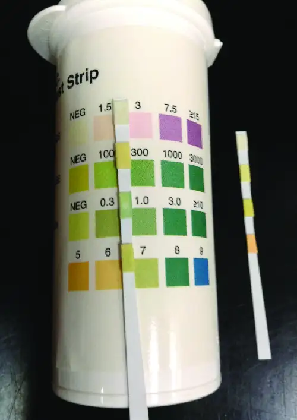
Case in Point: Cystitis in the Elderly
Robert, an 81-year-old widower with early onset Alzheimer’s, was recently moved to a nursing home because he was having difficulty living on his own. Within a few weeks of his arrival, he developed a fever and began to experience pain associated with urination. He also began having episodes of confusion and delirium. The doctor assigned to examine Robert read his file and noticed that Robert was treated for prostatitis several years earlier. When he asked Robert how often he had been urinating, Robert explained that he had been trying not to drink too much so that he didn’t have to walk to the restroom.
All of this evidence suggests that Robert likely has a urinary tract infection. Robert’s age means that his immune system has probably begun to weaken, and his previous prostate condition may be making it difficult for him to empty his bladder. In addition, Robert’s avoidance of fluids has led to dehydration and infrequent urination, which may have allowed an infection to establish itself in his urinary tract. The fever and dysuria are common signs of a UTI in patients of all ages, and UTIs in elderly patients are often accompanied by a notable decline in mental function.
Physical challenges often discourage elderly individuals from urinating as frequently as they would otherwise. In addition, neurological conditions that disproportionately affect the elderly (e.g., Alzheimer’s and Parkinson’s disease) may also reduce their ability to empty their bladders. Robert’s doctor noted that he was having difficulty navigating his new home and recommended that he be given more assistance and that his fluid intake be monitored. The doctor also took a urine sample and ordered a laboratory culture to confirm the identity of the causative agent.
- Why is it important to identify the causative agent in a UTI?
- Should the doctor prescribe a broad-spectrum or narrow-spectrum antibiotic to treat Robert’s UTI? Why?
Kidney Infections (Pyelonephritis and Glomerulonephritis)¶
Pyelonephritis, an inflammation of the kidney, can be caused by bacteria that have spread from other parts of the urinary tract (such as the bladder). In addition, pyelonephritis can develop from bacteria that travel through the bloodstream to the kidney. When the infection spreads from the lower urinary tract, the causative agents are typically fecal bacteria such as E. coli. Common signs and symptoms include back pain (due to the location of the kidneys), fever, and nausea or vomiting. Gross hematuria (visible blood in the urine) occurs in 30–40% of females but is rare in males.2 The infection can become serious, potentially leading to bacteremia and systemic effects that can become life-threatening. Scarring of the kidney can occur and persist after the infection has cleared, which may lead to dysfunction.
Diagnosis of pyelonephritis is made using microscopic examination of urine, culture of urine, testing for leukocyte esterase and nitrite levels, and examination of the urine for blood or protein. It is also important to use blood cultures to evaluate the spread of the pathogen into the bloodstream. Imaging of the kidneys may be performed in high-risk patients with diabetes or immunosuppression, the elderly, patients with previous renal damage, or to rule out an obstruction in the kidney. Pyelonephritis can be treated with either oral or intravenous antibiotics, including penicillins, cephalosporins, vancomycin, fluoroquinolones, carbapenems, and aminoglycosides.
Glomerulonephritis occurs when the glomeruli of the nephrons are damaged from inflammation. Whereas pyelonephritis is usually acute, glomerulonephritis may be acute or chronic. The most well-characterized mechanism of glomerulonephritis is the post-streptococcal sequelae associated with Streptococcus pyogenes throat and skin infections. Although S. pyogenes does not directly infect the glomeruli of the kidney, immune complexes that form in blood between S. pyogenes antigens and antibodies lodge in the capillary endothelial cell junctions of the glomeruli and trigger a damaging inflammatory response. Glomerulonephritis can also occur in patients with bacterial endocarditis (infection and inflammation of heart tissue); however, it is currently unknown whether glomerulonephritis associated with endocarditis is also immune-mediated.
Leptospirosis¶
Leptospira are generally harmless spirochetes that are commonly found in the soil. However, some pathogenic species can cause an infection called leptospirosis in the kidneys and other organs (Figure 23.6). Leptospirosis can produce fever, headache, chills, vomiting, diarrhea, and rash with severe muscular pain. If the disease continues to progress, infection of the kidney, meninges, or liver may occur and may lead to organ failure or meningitis. When the kidney and liver become seriously infected, it is called Weil’s disease. Pulmonary hemorrhagic syndrome can also develop in the lungs, and jaundice may occur.
Leptospira spp. are found widely in animals such as dogs, horses, cattle, pigs, and rodents, and are excreted in their urine. Humans generally become infected by coming in contact with contaminated soil or water, often while swimming or during flooding; infection can also occur through contact with body fluids containing the bacteria. The bacteria may enter the body through mucous membranes, skin injuries, or by ingestion. The mechanism of pathogenicity is not well understood.
Leptospirosis is extremely rare in the United States, although it is endemic in Hawaii; 50% of all cases in the United States come from Hawaii.3 It is more common in tropical than in temperate climates, and individuals who work with animals or animal products are most at risk. The bacteria can also be cultivated in specialized media, with growth observed in broth in a few days to four weeks; however, diagnosis of leptospirosis is generally made using faster methods, such as detection of antibodies to Leptospira spp. in patient samples using serologic testing. Polymerase chain reaction (PCR), enzyme-linked immunosorbent assay (ELISA), slide agglutination, and indirect immunofluorescence tests may all be used for diagnosis. Treatment for leptospirosis involves broad-spectrum antibiotics such as penicillin and doxycycline. For more serious cases of leptospirosis, antibiotics may be given intravenously.
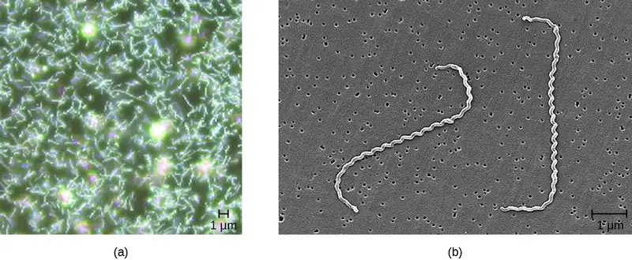
Check Your Understanding
- What is the most common cause of a kidney infection?
- What are the most common symptoms of a kidney infection?
Nongonococcal Urethritis (NGU)¶
There are two main categories of bacterial urethritis: gonorrheal and nongonococcal. Gonorrheal urethritis is caused by Neisseria gonorrhoeae and is associated with gonorrhea, a common STI. This cause of urethritis will be discussed in Bacterial Infections of the Reproductive System. The term nongonococcal urethritis (NGU) refers to inflammation of the urethra that is unrelated to N. gonorrhoeae. In females, NGU is often asymptomatic. In males, NGU is typically a mild disease, but can lead to purulent discharge and dysuria. Because the symptoms are often mild or nonexistent, most infected individuals do not know that they are infected, yet they are carriers of the disease. Asymptomatic patients also have no reason to seek treatment, and although not common, untreated NGU can spread to the reproductive organs, causing pelvic inflammatory disease and salpingitis in females and epididymitis and prostatitis in males. Important bacterial pathogens that cause nongonococcal urethritis include Chlamydia trachomatis, Mycoplasma genitalium, Ureaplasma urealyticum, and Mycoplasma hominis.
C. trachomatis is a difficult-to-stain, gram-negative bacterium with an ovoid shape. An intracellular pathogen, C. trachomatis causes the most frequently reported STI in the United States, chlamydia. Although most persons infected with C. trachomatis are asymptomatic, some patients can present with NGU. C. trachomatis can also cause non-urogenital infections such as the ocular disease trachoma (see Bacterial Infections of the Skin and Eyes). The life cycle of C. trachomatis is illustrated in Figure 4.12.
C. trachomatis has multiple possible virulence factors that are currently being studied to evaluate their roles in causing disease. These include polymorphic outer-membrane autotransporter proteins, stress response proteins, and type III secretion effectors. The type III secretion effectors have been identified in gram-negative pathogens, including C. trachomatis. This virulence factor is an assembly of more than 20 proteins that form what is called an injectisome for the transfer of other effector proteins that target the infected host cells. The outer-membrane autotransporter proteins are also an effective mechanism of delivering virulence factors involved in colonization, disease progression, and immune system evasion.
Other species associated with NGU include Mycoplasma genitalium, Ureaplasma urealyticum, and Mycoplasma hominis. These bacteria are commonly found in the normal microbiota of healthy individuals, who may acquire them during birth or through sexual contact, but they can sometimes cause infections leading to urethritis (in males and females) or vaginitis and cervicitis (in females).
M. genitalium is a more common cause of urethritis in most settings than N. gonorrhoeae, although it is less common than C. trachomatis. It is responsible for approximately 30% of recurrent or persistent infections, 20–25% of nonchlamydial NGU cases, and 15%–20% of NGU cases. M. genitalium attaches to epithelial cells and has substantial antigenic variation that helps it evade host immune responses. It has lipid-associated membrane proteins that are involved in causing inflammation.
Several possible virulence factors have been implicated in the pathogenesis of U. urealyticum (Figure 23.7). These include the ureaplasma proteins phospholipase A, phospholipase C, multiple banded antigen (MBA), urease, and immunoglobulin α protease. The phospholipases are virulence factors that damage the cytoplasmic membrane of target cells. The immunoglobulin α protease is an important defense against antibodies. It can generate hydrogen peroxide, which may adversely affect host cell membranes through the production of reactive oxygen species.
Treatments differ for gonorrheal and nongonococcal urethritis. However, N. gonorrhoeae and C. trachomatis are often simultaneously present, which is an important consideration for treatment. NGU is most commonly treated using tetracyclines (such as doxycycline) and azithromycin; erythromycin is an alternative option. Tetracyclines and fluoroquinolones are most commonly used to treat U. urealyticum, but resistance to tetracyclines is becoming an increasing problem.4 While tetracyclines have been the treatment of choice for M. hominis, increasing resistance means that other options must be used. Clindamycin and fluoroquinolones are alternatives. M. genitalium is generally susceptible to doxycycline, azithromycin, and moxifloxacin. Like other mycoplasma, M. genitalium does not have a cell wall and therefore β-lactams (including penicillins and cephalosporins) are not effective treatments.
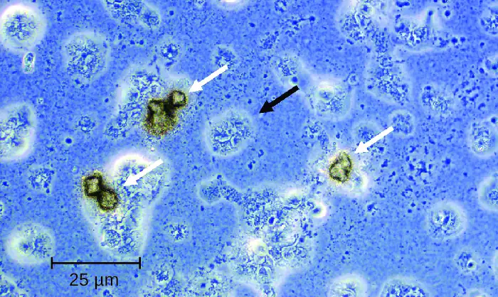
Check Your Understanding
- What are the three most common causes of urethritis?
- What three members of the normal microbiota can cause urethritis?
Disease Profile: Bacterial Infections of the Urinary Tract
Urinary tract infections can cause inflammation of the urethra (urethritis), bladder (cystitis), and kidneys (pyelonephritis), and can sometimes spread to other body systems through the bloodstream. Figure 23.8 captures the most important features of various types of UTIs.
![Table titled: Bacterial Infections of the Urinary Tract. Columns: Disease, Pathogen, Signs and Symptoms, Transmission, Diagnostic Tests, Antimicrobial Drugs. Disease - Cystitis; Escherichia coli, Enterococcus faecalis, Streptococcus agalactiae, Klebsiella pneumoniae, Staphylococcus saprophyticus, others; Dysuria, pyuria, hematuria, and bladder pain; most common in females due to the shorter urethra and abundant normal vaginal microbiota; Nontransmissible; opportunistic infections occur when fecal bacteria are introduced to urinary tract or when normal urination or immune function is impaired; Urine dipstick, urine culture for confirmation; Fluoroquinolones, nitrofurantoin, cephalosporins, trimethoprim, sulfamethoxazole. Disease - Leptospirosis; Leptospira spp.; Fever, headache, chills, vomiting, diarrhea, rash, muscular pain; in disseminated infections, may cause jaundice, pulmonary hemorrhaging, meningitis; From animals to humans via contact with urine or body fluids; PCR, ELISA, slide agglutination, indirect immunofluorescence; Doxycycline, amoxicillin, ampicillin, erythromycin, penicillin. Disease - Nongonococcal urethritis (NGU); Chlamydia trachomatis, Mycoplasma genitalium, Mycoplasma hominis, Ureaplasma urealyticum; Mild or asymptomatic; may cause purulent discharge and dysuria Transmitted sexually or from a pregnant person to neonate during birth; Urethral swabs and urine culture, PCR, NAAT; Azithromycin, doxycycline, erythromycin, fluoroquinolones. Disease Pyelonephritis, glomerulonephritis; E. coli, Proteus spp., Klebsiella spp., Streptococcus pyogenes, others; Back pain, fever, nausea, vomiting, blood in urine; possible scarring of the kidneys and impaired kidney function; severe infections may lead to sepsis and death; Nontransmissible; infection spreads to kidneys from urinary tract or through bloodstream; Urinalysis, urine culture, radioimaging of kidneys; Penicillins, cephalosporins, fluoroquinolones, aminoglycosides, others](img/osc-microbio-23-02-blakidtbl.webp)
23.3 Bacterial Infections of the Reproductive System¶
Learning Objectives
By the end of this section, you will be able to:
- Identify the most common bacterial pathogens that can cause infections of the reproductive system
- Compare the major characteristics of specific bacterial diseases affecting the reproductive system
In addition to infections of the urinary tract, bacteria commonly infect the reproductive tract. As with the urinary tract, parts of the reproductive system closest to the external environment are the most likely sites of infection. Often, the same microbes are capable of causing urinary tract and reproductive tract infections.
Bacterial Vaginitis and Vaginosis¶
Inflammation of the vagina is called vaginitis, often caused by a bacterial infection. It is also possible to have an imbalance in the normal vaginal microbiota without inflammation called bacterial vaginosis (BV). Vaginosis may be asymptomatic or may cause mild symptoms such as a thin, white-to-yellow, homogeneous vaginal discharge, burning, odor, and itching. The major causative agent is Gardnerella vaginalis, a gram-variable to gram-negative pleomorphic bacterium. Other causative agents include anaerobic species such as members of the genera Bacteroides and Fusobacterium. Additionally, ureaplasma and mycoplasma may be involved. The disease is usually self-limiting, although antibiotic treatment is recommended if symptoms develop.
G. vaginalis appears to be more virulent than other vaginal bacterial species potentially associated with BV. Like Lactobacillus spp., G. vaginalis is part of the normal vaginal microbiota, but when the population of Lactobacillus spp. decreases and the vaginal pH increases, G. vaginalis flourishes, causing vaginosis by attaching to vaginal epithelial cells and forming a thick protective biofilm. G. vaginalis also produces a cytotoxin called vaginolysin that lyses vaginal epithelial cells and red blood cells.
Since G. vaginalis can also be isolated from healthy females, the “gold standard” for the diagnosis of BV is direct examination of vaginal secretions and not the culture of G. vaginalis. Diagnosis of bacterial vaginosis from vaginal secretions can be accurately made in three ways. The first is to use a DNA probe. The second method is to assay for sialidase activity (sialidase is an enzyme produced by G. vaginalis and other bacteria associated with vaginosis, including Bacteroides spp., Prevotella spp., and Mobiluncus spp.). The third method is to assess gram-stained vaginal smears for microscopic morphology and relative numbers and types of bacteria, squamous epithelial cells, and leukocytes. By examining slides prepared from vaginal swabs, it is possible to distinguish lactobacilli (long, gram-positive rods) from other gram-negative species responsible for BV. A shift in predominance from gram-positive bacilli to gram-negative coccobacilli can indicate BV. Additionally, the slide may contain so-called clue cells, which are epithelial cells that appear to have a granular or stippled appearance due to bacterial cells attached to their surface (Figure 23.9). Presumptive diagnosis of bacterial vaginosis can involve an assessment of clinical symptoms and evaluation of vaginal fluids using Amsel’s diagnostic criteria which include 3 out of 4 of the following characteristics:
- white to yellow discharge;
- a fishy odor, most noticeable when 10% KOH is added;
- pH greater than 4.5;
- the presence of clue cells.
Treatment is often unnecessary because the infection often clears on its own. However, in some cases, antibiotics such as topical or oral clindamycin or metronidazole may be prescribed. Alternative treatments include oral tinidazole or clindamycin ovules (vaginal suppositories).
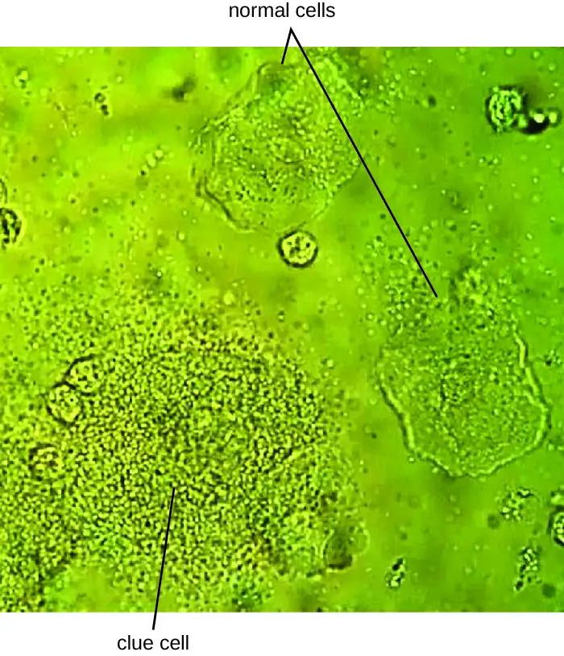
Check Your Understanding
- Explain the difference between vaginosis and vaginitis.
- What organisms are responsible for vaginosis and what organisms typically hold it at bay?
Clinical Focus: Part 2
There is no catch-all test for STIs, so several tests, in addition to a physical exam, are necessary to diagnose an infection. Nadia tries to relax in the exam room while she waits for the doctor to return, but she is nervous about the results.
When the doctor finally returns, she has some unexpected news: Nadia is pregnant. Surprised and excited, Nadia wants to know if the pregnancy explains her unusual symptoms. The doctor explains that the irritation that Nadia is experiencing is vaginosis, which develops when there is an imbalance in the bacteria in the vagina, as often occurs during pregnancy. Vaginosis can increase the risk of preterm birth and low birth weight, and a few studies have also shown that it can cause second-trimester miscarriage; however, the condition can be treated. To check for it, the doctor has asked the lab to perform a Gram stain on Nadia’s sample.
- What result would you expect from the Gram stain if Nadia has bacterial vaginosis?
- What is the relationship between pregnancy, estrogen levels, and development of bacterial vaginosis?
Jump to the next Clinical Focus box. Go back to the previous Clinical Focus box.
Gonorrhea¶
Also known as the clap, gonorrhea is a common sexually transmitted disease of the reproductive system that is especially prevalent in individuals between the ages of 15 and 24. It is caused by Neisseria gonorrhoeae, often called gonococcus or GC, which have fimbriae that allow the cells to attach to epithelial cells. It also has a type of lipopolysaccharide endotoxin called lipooligosaccharide as part of the outer membrane structure that enhances its pathogenicity. In addition to causing urethritis, N. gonorrhoeae can infect other body tissues such as the skin, meninges, pharynx, and conjunctiva.
Many infected individuals are asymptomatic carriers of gonorrhea. When symptoms do occur, they manifest differently in males and females. Males may develop pain and burning during urination and discharge from the penis that may be yellow, green, or white (Figure 23.10). Less commonly, the testicles may become swollen or tender. Over time, these symptoms can increase and spread. In some cases, chronic infection develops. The disease can also develop in the rectum, causing symptoms such as discharge, soreness, bleeding, itching, and pain (especially in association with bowel movements).
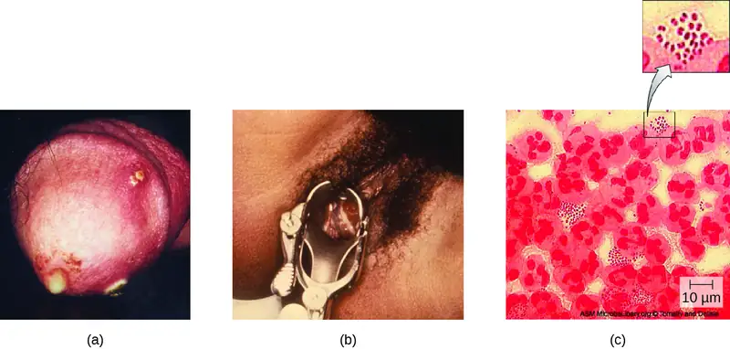
Females may develop pelvic pain, discharge from the vagina, intermenstrual bleeding (i.e., bleeding not associated with normal menstruation), and pain or irritation associated with urination. As with males, the infection can become chronic. In females, however, chronic infection can cause increases in menstrual flow. Rectal infection can also occur, with the symptoms previously described for males. Infections that spread to the endometrium and fallopian tubes can cause pelvic inflammatory disease (PID), characterized by pain in the lower abdominal region, dysuria, vaginal discharge, and fever. PID can also lead to infertility through scarring and blockage of the fallopian tubes (salpingitis); it may also increase the risk of a life-threatening ectopic pregnancy, which occurs when a fertilized egg begins developing somewhere other than the uterus (e.g., in the fallopian tube or ovary).
When a gonorrhea infection disseminates throughout the body, serious complications can develop. The infection may spread through the blood (bacteremia) and affect organs throughout the body, including the heart (gonorrheal endocarditis), joints (gonorrheal arthritis), and meninges encasing the brain (meningitis).
Urethritis caused by N. gonorrhoeae can be difficult to treat due to antibiotic resistance (see Micro Connections). Some strains have developed resistance to the fluoroquinolones, so cephalosporins are often a first choice for treatment. Because co-infection with C. trachomatis is common, the CDC recommends treating with a combination regimen of ceftriaxone and azithromycin. Treatment of sexual partners is also recommended to avoid reinfection and spread of infection to others.5
Check Your Understanding
- What are some of the serious consequences of a gonorrhea infection?
- What organism commonly coinfects with N. gonorrhoeae?
Micro Connections: Antibiotic Resistance in Neisseria
Antibiotic resistance in many pathogens is steadily increasing, causing serious concern throughout the public health community. Increased resistance has been especially notable in some species, such as Neisseria gonorrhoeae. The CDC monitors the spread of antibiotic resistance in N. gonorrhoeae, which it classifies as an urgent threat, and makes recommendations for treatment. So far, N. gonorrhoeae has shown resistance to cefixime (a cephalosporin), ceftriaxone (another cephalosporin), azithromycin, and tetracycline. Resistance to tetracycline is the most common, and was seen in 188,600 cases of gonorrhea in 2011 (out of a total 820,000 cases). In 2011, some 246,000 cases of gonorrhea involved strains of N. gonorrhoeae that were resistant to at least one antibiotic.6 These resistance genes are spread by plasmids, and a single bacterium may be resistant to multiple antibiotics. The CDC currently recommends treatment with two medications, ceftriaxone and azithromycin, to attempt to slow the spread of resistance. If resistance to cephalosporins increases, it will be extremely difficult to control the spread of N. gonorrhoeae.
Chlamydia¶
Chlamydia trachomatis is the causative agent of the STI chlamydia (Figure 23.11). While many Chlamydia infections are asymptomatic, chlamydia is a major cause of nongonococcal urethritis (NGU) and may also cause epididymitis and orchitis in males. In females, chlamydia infections can cause urethritis, salpingitis, and PID. In addition, chlamydial infections may be associated with an increased risk of cervical cancer.
Because chlamydia is widespread, often asymptomatic, and has the potential to cause substantial complications, routine screening is recommended for sexually active females who are under age 25, at high risk, or beginning prenatal care.
Certain serovars of C. trachomatis can cause an infection of the lymphatic system in the groin known as lymphogranuloma venereum. This condition is commonly found in tropical regions and can also co-occur in conjunction with human immunodeficiency virus (HIV) infection. After the microbes invade the lymphatic system, buboes (large lymph nodes, see Figure 23.11) form and can burst, releasing pus through the skin. The male genitals can become greatly enlarged and in females the rectum may become narrow.
Urogenital infections caused by C. trachomatis can be treated using azithromycin or doxycycline (the recommended regimen from the CDC). Erythromycin, levofloxacin, and ofloxacin are alternatives.
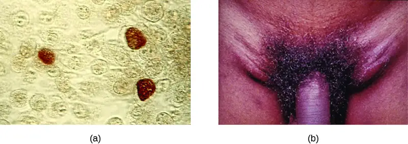
Check Your Understanding
- Compare the signs and symptoms of chlamydia infection in males and females.
Syphilis¶
Syphilis is spread through direct physical (generally sexual) contact, and is caused by the gram-negative spirochete Treponema pallidum. T. pallidum has a relatively simple genome and lacks lipopolysaccharide endotoxin characteristic of gram-negative bacteria. However, it does contain lipoproteins that trigger an immune response in the host, causing tissue damage that may enhance the pathogen’s ability to disseminate while evading the host immune system.
After entering the body, T. pallidum moves rapidly into the bloodstream and other tissues. If not treated effectively, syphilis progresses through three distinct stages: primary, secondary, and tertiary. Primary syphilis appears as a single lesion on the cervix, penis, or anus within 10 to 90 days of transmission. Such lesions contain many T. pallidum cells and are highly infectious. The lesion, called a hard chancre, is initially hard and painless, but it soon develops into an ulcerated sore (Figure 23.12). Localized lymph node swelling may occur as well. In some cases, these symptoms may be relatively mild, and the lesion may heal on its own within two to six weeks. Because the lesions are painless and often occur in hidden locations (e.g., the cervix or anus), infected individuals sometimes do not notice them.
The secondary stage generally develops once the primary chancre has healed or begun to heal. Secondary syphilis is characterized by a rash that affects the skin and mucous membranes of the mouth, vagina, or anus. The rash often begins on the palms or the soles of the feet and spreads to the trunk and the limbs (Figure 23.12). The rash may take many forms, such as macular or papular. On mucous membranes, it may manifest as mucus patches or white, wartlike lesions called condylomata lata. The rash may be accompanied by malaise, fever, and swelling of lymph nodes. Individuals are highly contagious in the secondary stage, which lasts two to six weeks and is recurrent in about 25% of cases.
After the secondary phase, syphilis can enter a latent phase, in which there are no symptoms but microbial levels remain high. Blood tests can still detect the disease during latency. The latent phase can persist for years.
Tertiary syphilis, which may occur 10 to 20 years after infection, produces the most severe symptoms and can be fatal. Granulomatous lesions called gummas may develop in a variety of locations, including mucous membranes, bones, and internal organs (Figure 23.12). Gummas can be large and destructive, potentially causing massive tissue damage. The most deadly lesions are those of the cardiovascular system (cardiovascular syphilis) and the central nervous system (neurosyphilis). Cardiovascular syphilis can result in a fatal aortic aneurysm (rupture of the aorta) or coronary stenosis (a blockage of the coronary artery). Damage to the central nervous system can cause dementia, personality changes, seizures, general paralysis, speech impairment, loss of vision and hearing, and loss of bowel and bladder control.
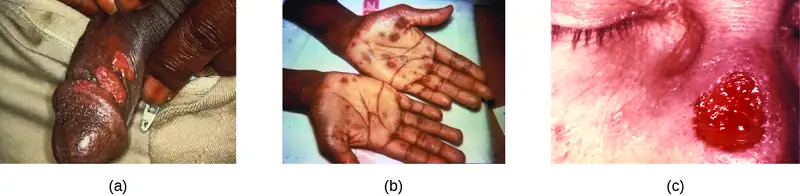
The recommended methods for diagnosing early syphilis are darkfield or brightfield (silver stain) microscopy of tissue or exudate from lesions to detect T. pallidum (Figure 23.13). If these methods are not available, two types of serologic tests (treponemal and nontreponemal) can be used for a presumptive diagnosis once the spirochete has spread in the body. Nontreponemal serologic tests include the Venereal Disease Research Laboratory (VDRL) and rapid plasma reagin (RPR) tests. These are similar screening tests that detect nonspecific antibodies (those for lipid antigens produced during infection) rather than those produced against the spirochete. Treponemal serologic tests measure antibodies directed against T. pallidum antigens using particle agglutination (T. pallidum passive particle agglutination or TP-PA), immunofluorescence (the fluorescent T. pallidum antibody absorption or FTA-ABS), various enzyme reactions (enzyme immunoassays or EIAs) and chemiluminescence immunoassays (CIA). Confirmatory testing, rather than screening, must be done using treponemal rather than nontreponemal tests because only the former tests for antibodies to spirochete antigens. Both treponemal and nontreponemal tests should be used (as opposed to just one) since both tests have limitations than can result in false positives or false negatives.
Neurosyphilis cannot be diagnosed using a single test. With or without clinical signs, it is generally necessary to assess a variety of factors, including reactive serologic test results, cerebrospinal fluid cell count abnormalities, cerebrospinal fluid protein abnormalities, or reactive VDRL-CSF (the VDRL test of cerebrospinal fluid). The VDRL-CSF is highly specific, but not sufficiently sensitive for conclusive diagnosis.
The recommended treatment for syphilis is parenteral penicillin G (especially long-acting benzathine penicillin, although the exact choice depends on the stage of disease). Other options include tetracycline and doxycycline.
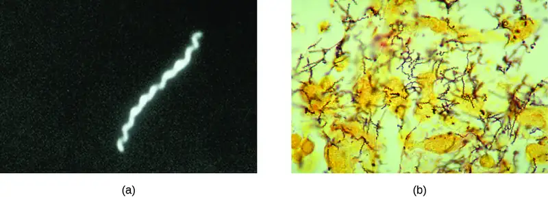
Congenital Syphilis¶
Congenital syphilis is passed during pregnancy to a fetus when untreated primary or secondary syphilis is present. In many cases, infection may lead to miscarriage or stillbirth. Children born with congenital syphilis show symptoms of secondary syphilis and may develop mucus patches that deform the nose. In infants, gummas can cause significant tissue damage to organs and teeth. Many other complications may develop, such as osteochondritis, anemia, blindness, bone deformations, neurosyphilis, and cardiovascular lesions. Because congenital syphilis poses such a risk to the fetus, people are screened for syphilis infection during the first trimester of pregnancy as part of the TORCH panel of prenatal tests.
Check Your Understanding
- What aspect of tertiary syphilis can lead to death?
- How do treponemal serologic tests detect an infection?
Chancroid¶
The sexually transmitted infection chancroid is caused by the gram-negative rod Haemophilus ducreyi. It is characterized by soft chancres (Figure 23.14) on the genitals or other areas associated with sexual contact, such as the mouth and anus. Unlike the hard chancres associated with syphilis, soft chancres develop into painful, open sores that may bleed or produce fluid that is highly contagious. In addition to causing chancres, the bacteria can invade the lymph nodes, potentially leading to pus discharge through the skin from lymph nodes in the groin. Like other genital lesions, soft chancres are of particular concern because they compromise the protective barriers of the skin or mucous membranes, making individuals more susceptible to HIV and other sexually transmitted diseases.
Several virulence factors have been associated with H. ducreyi, including lipooligosaccharides, protective outer membrane proteins, antiphagocytic proteins, secretory proteins, and collagen-specific adhesin NcaA. The collagen-specific adhesion NcaA plays an important role in initial cellular attachment and colonization. Outer membrane proteins DsrA and DltA have been shown to provide protection from serum-mediated killing by antibodies and complement.
H. ducreyi is difficult to culture; thus, diagnosis is generally based on clinical observation of genital ulcers and tests that rule out other diseases with similar ulcers, such as syphilis and genital herpes. PCR tests for H. ducreyi have been developed in some laboratories, but as of 2015 none had been cleared by the US Food and Drug Administration (FDA).7 Recommended treatments for chancroid include antibiotics such as azithromycin, ciprofloxacin, erythromycin and ceftriaxone. Resistance to ciprofloxacin and erythromycin has been reported.8
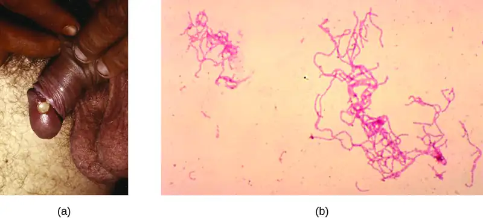
Check Your Understanding
- What is the key difference between chancroid lesions and those associated with syphilis?
- Why is it difficult to definitively diagnose chancroid?
Disease Profile: Bacterial Reproductive Tract Infections
Many bacterial infections affecting the reproductive system are transmitted through sexual contact, but some can be transmitted by other means. In the United States, gonorrhea and chlamydia are common illnesses with incidences of about 350,000 and 1.44 million, respectively, in 2014. Syphilis is a rarer disease with an incidence of 20,000 in 2014. Chancroid is exceedingly rare in the United States with only six cases in 2014 and a median of 10 cases per year for the years 2010–2014.9 Figure 23.15 summarizes bacterial infections of the reproductive tract.
![Table title: Bacterial Infections of the Reproductive Tract. Columns: Disease, Pathogen, Signs and Symptoms Transmission, Diagnostic Tests, Antimicrobial Drugs. Disease - Bacterial vaginosis (BV); Gardnerella vaginalis, Bacteroides spp., Fusobacterium spp., others; Often asymptomatic; vaginal discharge, burning, odor, or itching Opportunistic infection caused by imbalance of normal vaginal microbiota; Vaginal smear; Clindamycin, metronidazole, tinidazole. Disease – Chancroid; Haemophilus ducreyi; Soft, painful chancres on genitals, mouth, or anus; swollen lymph nodes; pus discharge; Sexual contact or contact with open lesions or discharge; Observation of clinical symptoms and negative tests for syphilis and herpes; Azithromycin, ceftriaxone, erythromycin, ciprofloxacin. Disease - Chlamydia ; Chlamydia trachomatis; Often asymptomatic; in men, urethritis, epididymitis, orchitis; in females, urethritis, vaginal discharge or bleeding, pelvic inflammatory disease, salpingitis, increased risk of cervical cancer ; Sexual contact or from a pregnant person to neonate during birth; NAAT, urine sample, vaginal swab, culture; Azithromycin, doxycycline, erythromycin, ofloxacin, or levofloxacin. Disease – Gonorrhea; Neisseria gonorrhoeae; Urethritis, dysuria, penile or vaginal discharge, rectal pain and bleeding; in females, pelvic pain, intermenstrual bleeding, pelvic inflammatory disease, salpingitis, increased risk of infertility or ectopic pregnancy; in disseminated infections, arthritis, endocarditis, meningitis; Sexual contact ; Urine sample or culture, NAAT, PCR, ELISA; Ceftriaxone, azithromycin. Syphilis; Treponema pallidum Primary: hard chancre; Secondary: rash, cutaneous lesions, condylomata, malaise, fever, swollen lymph nodes; Tertiary: gummas, cardiovascular syphilis, neurosyphilis, possibly fatal; Sexual contact or from a pregnant person to neonate during birth; Darkfield or brightfield silver stain examination of lesion tissue or exudate, treponemal and non-treponemal serological testing, VDRL-CSF for neurosyphilis, prenatal TORCH panel; Penicillin G, tetracycline, doxycycline.](img/osc-microbio-23-03-repinftbl.webp)
23.4 Viral Infections of the Reproductive System¶
Learning Objectives
By the end of this section, you will be able to:
- Identify the most common viruses that cause infections of the reproductive system
- Compare the major characteristics of specific viral diseases affecting the reproductive system
Several viruses can cause serious problems for the human reproductive system. Most of these viral infections are incurable, increasing the risk of persistent sexual transmission. In addition, such viral infections are very common in the United States. For example, human papillomavirus (HPV) is the most common STI in the country, with an estimated prevalence of 79.1 million infections in 2008; herpes simplex virus 2 (HSV-2) is the next most prevalent STI at 24.1 million infections.10 In this section, we will examine these and other major viral infections of the reproductive system.
Genital Herpes¶
Genital herpes is a common condition caused by the herpes simplex virus (Figure 23.16), an enveloped, double-stranded DNA virus that is classified into two distinct types. Herpes simplex virus has several virulence factors, including infected cell protein (ICP) 34.5, which helps in replication and inhibits the maturation of dendritic cells as a mechanism of avoiding elimination by the immune system. In addition, surface glycoproteins on the viral envelope promote the coating of herpes simplex virus with antibodies and complement factors, allowing the virus to appear as “self” and prevent immune system activation and elimination.
There are two herpes simplex virus types. While herpes simplex virus type 1 (HSV-1) is generally associated with oral lesions like cold sores or fever blisters (see Viral Infections of the Skin and Eyes), herpes simplex virus type 2 (HSV-2) is usually associated with genital herpes. However, both viruses can infect either location as well as other parts of the body. Oral-genital contact can spread either virus from the mouth to the genital region or vice versa.
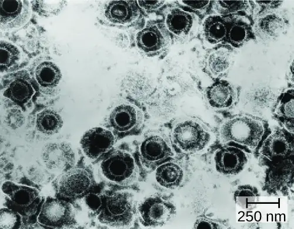
Many infected individuals do not develop symptoms, and thus do not realize that they carry the virus. However, in some infected individuals, fever, chills, malaise, swollen lymph nodes, and pain precede the development of fluid-filled vesicles that may be irritating and uncomfortable. When these vesicles burst, they release infectious fluid and allow transmission of HSV. In addition, open herpes lesions can increase the risk of spreading or acquiring HIV.
In males, the herpes lesions typically develop on the penis and may be accompanied by a watery discharge. In females, the vesicles develop most commonly on the vulva, but may also develop on the vagina or cervix (Figure 23.17). The symptoms are typically mild, although the lesions may be irritating or accompanied by urinary discomfort. Use of condoms may not always be an effective means of preventing transmission of genital herpes since the lesions can occur on areas other than the genitals.
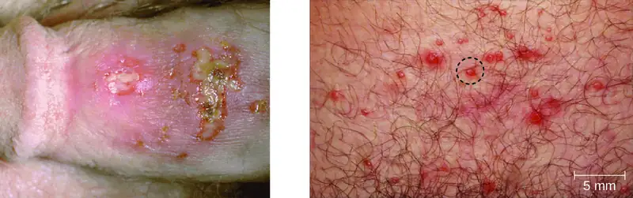
Herpes simplex viruses can cause recurrent infections because the virus can become latent and then be reactivated. This occurs more commonly with HSV-2 than with HSV-1.11 The virus moves down peripheral nerves, typically sensory neurons, to ganglia in the spine (either the trigeminal ganglion or the lumbar-sacral ganglia) and becomes latent. Reactivation can later occur, causing the formation of new vesicles. HSV-2 most effectively reactivates from the lumbar-sacral ganglia. Not everyone infected with HSV-2 experiences reactivations, which are typically associated with stressful conditions, and the frequency of reactivation varies throughout life and among individuals. Between outbreaks or when there are no obvious vesicles, the virus can still be transmitted.
Virologic and serologic techniques are used for diagnosis. The virus may be cultured from lesions. The immunostaining methods that are used to detect virus from cultures generally require less expertise than methods based on cytopathic effect (CPE), as well as being a less expensive option. However, PCR or other DNA amplification methods may be preferred because they provide the most rapid results without waiting for culture amplification. PCR is also best for detecting systemic infections. Serologic techniques are also useful in some circumstances, such as when symptoms persist but PCR testing is negative.
While there is no cure or vaccine for HSV-2 infections, antiviral medications are available that manage the infection by keeping the virus in its dormant or latent phase, reducing signs and symptoms. If the medication is discontinued, then the condition returns to its original severity. The recommended medications, which may be taken at the start of an outbreak or daily as a method of prophylaxis, are acyclovir, famciclovir, and valacyclovir.
Neonatal Herpes¶
Herpes infections in newborns, referred to as neonatal herpes, are generally transmitted to the neonate during childbirth, when the child is exposed to pathogens in the birth canal. Infections can occur regardless of whether lesions are present in the birth canal. In most cases, the infection of the newborn is limited to skin, mucous membranes, and eyes, and outcomes are good. However, sometimes the virus becomes disseminated and spreads to the central nervous system, resulting in motor function deficits or death.
In some cases, infections can occur before birth when the virus crosses the placenta. This can cause serious complications in fetal development and may result in spontaneous abortion or severe disabilities if the fetus survives. The condition is most serious when the person is infected with HSV for the first time during pregnancy. Thus, people are screened for HSV infection during the first trimester of pregnancy as part of the TORCH panel of prenatal tests (see How Pathogens Cause Disease). Systemic acyclovir treatment is recommended to treat newborns with neonatal herpes.
Check Your Understanding
- Why are latent herpes virus infections still of clinical concern?
- How is neonatal herpes contracted?
Human Papillomas¶
Warts of all types are caused by a variety of strains of human papillomavirus (HPV) (see Viral Infections of the Skin and Eyes). Condylomata acuminata, more commonly called genital warts or venereal warts (Figure 23.18), are an extremely prevalent STI caused by certain strains of HPV. Condylomata are irregular, soft, pink growths that are found on external genitalia or the anus.
HPV is a small, non-enveloped virus with a circular double-stranded DNA genome. Researchers have identified over 200 different strains (called types) of HPV, with approximately 40 causing STIs. While some types of HPV cause genital warts, HPV infection is often asymptomatic and self-limiting. However, genital HPV infection often co-occurs with other STIs like syphilis or gonorrhea. Additionally, some forms of HPV (not the same ones associated with genital warts) are associated with cervical cancers. At least 14 oncogenic (cancer-causing) HPV types are known to have a causal association with cervical cancers. Examples of oncogenic HPV are types 16 and 18, which are associated with 70% of cervical cancers.12 Oncogenic HPV types can also cause oropharyngeal cancer, anal cancer, vaginal cancer, vulvar cancer, and penile cancer. Most of these cancers are caused by HPV type 16. HPV virulence factors include proteins (E6 and E7) that are capable of inactivating tumor suppressor proteins, leading to uncontrolled cell division and the development of cancer.
HPV cannot be cultured, so molecular tests are the primary method used to detect HPV. While routine HPV screening is not recommended for males, it is included in guidelines for females. An initial screening for HPV at age 30, conducted at the same time as a Pap test, is recommended. If the tests are negative, then further HPV testing is recommended every five years. More frequent testing may be needed in some cases. The protocols used to collect, transport, and store samples vary based on both the type of HPV testing and the purpose of the testing. This should be determined in individual cases in consultation with the laboratory that will perform the testing.
Because HPV testing is often conducted concurrently with Pap testing, the most common approach uses a single sample collection within one vial for both. This approach uses liquid-based cytology (LBC). The samples are then used for Pap smear cytology as well as HPV testing and genotyping. HPV can be recognized in Pap smears by the presence of cells called koilocytes (called koilocytosis or koilocytotic atypia). Koilocytes have a hyperchromatic atypical nucleus that stains darkly and a high ratio of nuclear material to cytoplasm. There is a distinct clear appearance around the nucleus called a perinuclear halo (Figure 23.19).
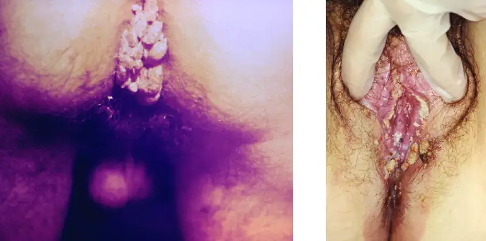
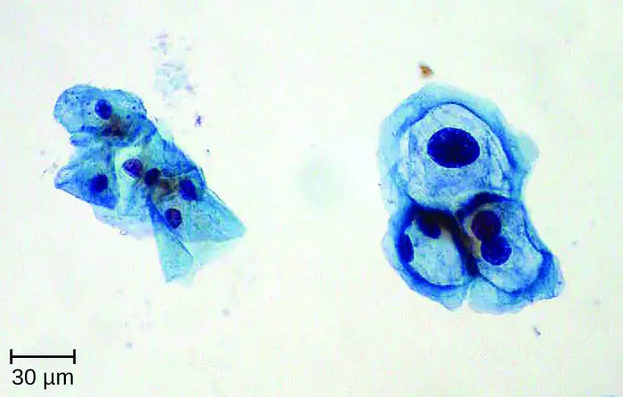
Most HPV infections resolve spontaneously; however, various therapies are used to treat and remove warts. Topical medications such as imiquimod (which stimulates the production of interferon), podofilox, or sinecatechins, may be effective. Warts can also be removed using cryotherapy or surgery, but these approaches are less effective for genital warts than for other types of warts. Electrocauterization and carbon dioxide laser therapy are also used for wart removal.
Regular Pap testing can detect abnormal cells that might progress to cervical cancer, followed by biopsy and appropriate treatment. Vaccines for some of the high risk HPV types are now available. Gardasil vaccine includes types 6, 11, 16 and 18 (types 6 and 11 are associated with 90% of genital wart infections and types 16 and 18 are associated with 70% of cervical cancers). Gardasil 9 vaccinates against the previous four types and an additional five high-risk types (31, 33, 45, 52, and 58). Cervarix vaccine includes just HPV types 16 and 18. Vaccination is the most effective way to prevent infection with oncogenic HPV, but it is important to note that not all oncogenic HPV types are covered by the available vaccines. It is recommended for all young people prior to sexual activity (usually between the ages of nine and fifteen).
Link to Learning
Watch a video of how perceptions of HPV affect vaccination rates.
Check Your Understanding
- What is diagnostic of an HPV infection in a Pap smear?
- What is the motivation for HPV vaccination?
Micro Connections: Secret STIs
Few people who have an STI (or think they may have one) are eager to share that information publicly. In fact, many patients are even uncomfortable discussing the symptoms privately with their doctors. Unfortunately, the social stigma associated with STIs makes it harder for infected individuals to seek the treatment they need and creates the false perception that STIs are rare. In reality, STIs are quite common, but it is difficult to determine exactly how common.
A recent study on the effects of HPV vaccination found a baseline HPV prevalence of 26.8% for females between the ages of 14 and 59. Among females aged 20–24, the prevalence was 44.8%; in other words, almost half of the females in this age bracket had a current infection.13 According to the CDC, HSV-2 infection was estimated to have a prevalence of 15.5% in younger individuals (14–49 years of age) in 2007–2010, down from 20.3% in the same age group in 1988–1994. However, the CDC estimates that 87.4% of infected individuals in this age group have not been diagnosed by a physician.14
Another complicating factor is that many STIs can be asymptomatic or have long periods of latency. For example, the CDC estimates that among females ages 14–49 in the United States, about 2.3 million (3.1%) are infected with the sexually transmitted protozoan Trichomonas (see Protozoan Infections of the Urogenital System); however, in a study of infected females, 85% of those diagnosed with the infection were asymptomatic.15
Even when patients are treated for symptomatic STIs, it can be difficult to obtain accurate data on the number of cases. Whereas STIs like chlamydia, gonorrhea, and syphilis are notifiable diseases—meaning each diagnosis must be reported by healthcare providers to the CDC—other STIs are not notifiable (e.g., genital herpes, genital warts, and trichomoniasis). Between the social taboos, the inconsistency of symptoms, and the lack of mandatory reporting, it can be difficult to estimate the true prevalence of STIs—but it is safe to say they are much more prevalent than most people think.
Disease Profile: Viral Reproductive Tract Infections
Figure 23.20 summarizes the most important features of viral diseases affecting the human reproductive tract.
![Table titled: Viral Infections of the Reproductive Tract. Columns: Disease Pathogen, Signs and Symptoms, Transmission, Diagnostic Tests, Antimicrobial Drugs/Vaccines. Disease - Cervical cancer; HPV types 16, 18, and others; Development of cancer in cervix (or elsewhere); Direct contact, including sexual; Pap smear; Gardasil vaccine, Cervarix vaccine. Disease - Genital herpes; Herpes simplex virus (HSV-1 or HSV-2); Recurring outbreaks of skin vesicles on genitalia and elsewhere; asymptomatic in many individuals; Sexual contact or contact with open lesions; Viral culture, PCR, ELISA; Acyclovir, famciclovir, valacyclovir. Disease - Human papillomas; Human papillomavirus (HPV) (various strains); Genital warts or warts in other areas; Direct contact, including sexual; None; Imiquimod, podofilox, sinecatechins. Disease - Neonatal herpes; Herpes simplex virus (HSV-1 or HSV-2); Vesicles on the skin, mucous membranes, eyes; in disseminated infections, motor impairment and possible death of fetus or newborn; Exposure to pathogens in the birth canal; transplacental infection in some cases; Viral culture or PCR Acyclovir.](img/osc-microbio-23-04-virinftbl.webp)
23.5 Fungal Infections of the Reproductive System¶
Learning Objectives
By the end of this section, you will be able to:
- Summarize the important characteristics of vaginal candidiasis
Only one major fungal pathogen affects the urogenital system. Candida is a genus of fungi capable of existing in a yeast form or as a multicellular fungus. Candida spp. are commonly found in the normal, healthy microbiota of the skin, gastrointestinal tract, respiratory system, and female urogenital tract (Figure 23.21). They can be pathogenic due to their ability to adhere to and invade host cells, form biofilms, secrete hydrolases (e.g., proteases, phospholipases, and lipases) that assist in their spread through tissues, and change their phenotypes to protect themselves from the immune system. However, they typically only cause disease in the female reproductive tract under conditions that compromise the host’s defenses. While there are at least 20 Candida species of clinical importance, C. albicans is the species most commonly responsible for fungal vaginitis.
As discussed earlier, lactobacilli in the vagina inhibit the growth of other organisms, including bacteria and Candida, but disruptions can allow Candida to increase in numbers. Typical disruptions include antibiotic therapy, illness (especially diabetes), pregnancy, and the presence of transient microbes. Immunosuppression can also play a role, and the severe immunosuppression associated with HIV infection often allows Candida to thrive. This can cause genital or vaginal candidiasis, a condition characterized by vaginitis and commonly known as a yeast infection. When a yeast infection develops, inflammation occurs along with symptoms of pruritus (itching), a thick white or yellow discharge, and odor.
Other forms of candidiasis include cutaneous candidiasis (see Mycoses of the Skin) and oral thrush (see Microbial Diseases of the Mouth and Oral Cavity). Although Candida spp. are found in the normal microbiota, Candida spp. may also be transmitted between individuals. Sexual contact is a common mode of transmission, although candidiasis is not considered an STI.
Diagnosis of vaginal candidiasis can be made using microscopic evaluation of vaginal secretions to determine whether there is an excess of Candida. Culturing approaches are less useful because Candida is part of the normal microbiota and will regularly appear. It is also easy to contaminate samples with Candida because it is so common, so care must be taken to handle clinical material appropriately. Samples can be refrigerated if there is a delay in handling. Candida is a dimorphic fungus, so it does not only exist in a yeast form; cultivation can be used to identify chlamydospores and pseudohyphae, which develop from germ tubes (Figure 23.22). The presence of the germ tube can be used in a diagnostic test in which cultured yeast cells are combined with rabbit serum and observed after a few hours for the presence of germ tubes. Molecular tests are also available if needed. The Affirm VPII Microbial Identification Test, for instance, tests simultaneously for the vaginal microbes C. albicans, G. vaginalis (see Bacterial Infections of the Urinary System), and Trichomonas vaginalis (see Protozoan Infections of the Urogenital System).
Topical antifungal medications for vaginal candidiasis include butoconazole, miconazole, clotrimazole, tioconazole, and nystatin. Oral treatment with fluconazole can be used. There are often no clear precipitating factors for infection, so prevention is difficult.
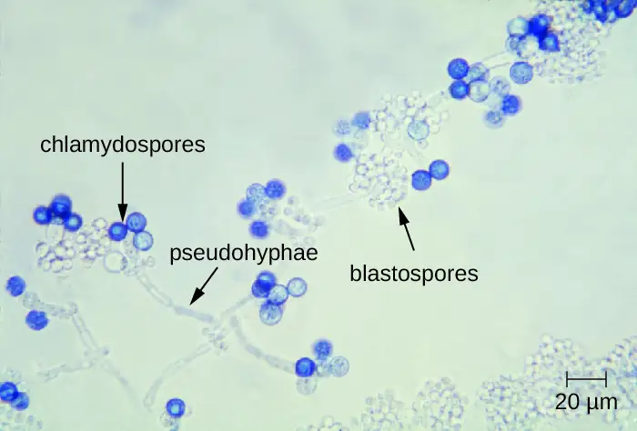
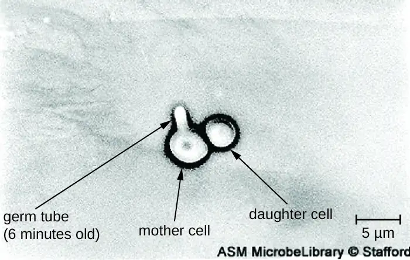
Check Your Understanding
- What factors can lead to candidiasis?
- How is candidiasis typically diagnosed?
Clinical Focus: Part 3
The Gram stain of Nadia’s vaginal smear showed that the concentration of lactobacilli relative to other species in Nadia’s vaginal sample was abnormally low. However, there were no clue cells visible, which suggests that the infection is not bacterial vaginosis. But a wet-mount slide showed an overgrowth of yeast cells, suggesting that the problem is candidiasis, or a yeast infection (Figure 23.23). This, Nadia’s doctor assures her, is good news. Candidiasis is common during pregnancy and easily treatable.
- Knowing that the problem is candidiasis, what treatments might the doctor suggest?
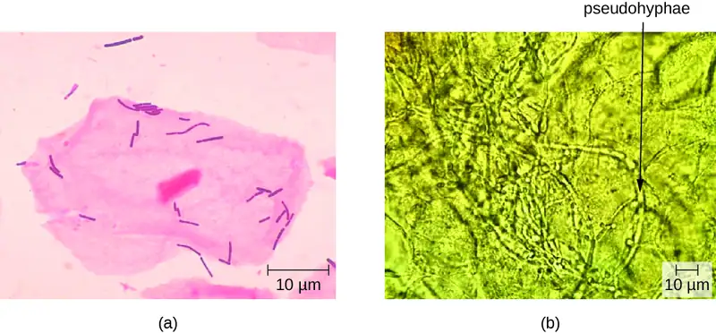
Jump to the next Clinical Focus box. Go back to the previous Clinical Focus box.
23.6 Protozoan Infections of the Urogenital System¶
Learning Objectives
By the end of this section, you will be able to:
- Identify the most common protozoan pathogen that causes infections of the reproductive system
- Summarize the important characteristics of trichomoniasis
Only one major protozoan species causes infections in the urogenital system. Trichomoniasis, or “trich,” is the most common nonviral STI and is caused by a flagellated protozoan Trichomonas vaginalis. T. vaginalis has an undulating membrane and, generally, an amoeboid shape when attached to cells in the vagina. In culture, it has an oval shape.
It is found only as a trophozoite and does not form cysts. T. vaginalis can adhere to cells using adhesins such as lipoglycans; it also has other cell-surface virulence factors, including tetraspanins that are involved in cell adhesion, motility, and tissue invasion. In addition, T. vaginalis is capable of phagocytosing other microbes of the normal microbiota, contributing to the development of an imbalance that is favorable to infection.
Anyone can develop trichomoniasis. Males are generally asymptomatic, and although females are more likely to develop symptoms, they are often asymptomatic as well. When symptoms do occur, they are characteristic of urethritis. Males experience itching, irritation, discharge from the penis, and burning after urination or ejaculation. Females experience dysuria; itching, burning, redness, and soreness of the genitalia; and vaginal discharge. The infection may also spread to the cervix. Infection increases the risk of transmitting or acquiring HIV and is associated with pregnancy complications such as preterm birth.
Microscopic evaluation of wet mounts is an inexpensive and convenient method of diagnosis, but the sensitivity of this method is low (Figure 23.24). Nucleic acid amplification testing (NAAT) is preferred due to its high sensitivity. Using wet mounts and then NAAT for those who initially test negative is one option to improve sensitivity. Samples may be obtained for NAAT using urine, vaginal, or endocervical specimens for females and with urine and urethral swabs for males. It is also possible to use other methods such as the OSOM Trichomonas Rapid Test (an immunochromatographic test that detects antigen) and a DNA probe test for multiple species associated with vaginitis (the Affirm VPII Microbial Identification Test discussed in section 23.5).16 T. vaginalis is sometimes detected on a Pap test, but this is not considered diagnostic due to high rates of false positives and negatives. The recommended treatment for trichomoniasis is oral metronidazole or tinidazole. Sexual partners should be treated as well.
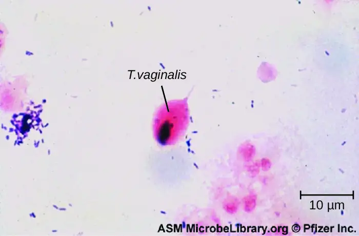
Check Your Understanding
- What are the symptoms of trichomoniasis?
Eye on Ethics: STIs and Privacy
For many STIs, it is common to contact and treat sexual partners of the patient. This is especially important when a new illness has appeared, as when HIV became more prevalent in the 1980s. But to contact sexual partners, it is necessary to obtain their personal information from the patient. This raises difficult questions. In some cases, providing the information may be embarrassing or difficult for the patient, even though withholding such information could put their sexual partner(s) at risk.
Legal considerations further complicate such situations. The Health Insurance Portability and Accountability Act (HIPAA), passed into law in 1996, sets the standards for the protection of patient information. It requires businesses that use health information, such as insurance companies and healthcare providers, to maintain strict confidentiality of patient records. Contacting a patient’s sexual partners may therefore violate the patient’s privacy rights if the patient’s diagnosis is revealed as a result.
From an ethical standpoint, which is more important: the patient’s privacy rights or the sexual partner’s right to know that they may be at risk of a sexually transmitted disease? Does the answer depend on the severity of the disease or are the rules universal? Suppose the physician knows the identity of the sexual partner but the patient does not want that individual to be contacted. Would it be a violation of HIPAA rules to contact the individual without the patient’s consent?
Questions related to patient privacy become even more complicated when dealing with patients who are minors. Adolescents may be reluctant to discuss their sexual behavior or health with a health professional, especially if they believe that healthcare professionals will tell their parents. This leaves many teens at risk of having an untreated infection or of lacking the information to protect themselves and their partners. On the other hand, parents may feel that they have a right to know what is going on with their child. How should physicians handle this? Should parents always be told even if the adolescent wants confidentiality? Does this affect how the physician should handle notifying a sexual partner?
Clinical Focus: Resolution
Vaginal candidiasis is generally treated using topical antifungal medications such as butoconazole, miconazole, clotrimazole, ticonozole, nystatin, or oral fluconazole. However, it is important to be careful in selecting a treatment for use during pregnancy. Nadia’s doctor recommended treatment with topical clotrimazole. This drug is classified as a category B drug by the FDA for use in pregnancy, and there appears to be no evidence of harm, at least in the second or third trimesters of pregnancy. Based on Nadia’s particular situation, her doctor thought that it was suitable for very short-term use even though she was still in the first trimester. After a seven-day course of treatment, Nadia’s yeast infection cleared. She continued with a normal pregnancy and delivered a healthy baby eight months later.
Higher levels of hormones during pregnancy can shift the typical microbiota composition and balance in the vagina, leading to high rates of infections such as candidiasis or vaginosis. Topical treatment has an 80–90% success rate, with only a small number of cases resulting in recurrent or persistent infections. Longer term or intermittent treatment is usually effective in these cases.
Go back to the previous Clinical Focus box.
Disease Profile: Fungal and Protozoan Reproductive Tract Infections
Figure 23.25 summarizes the most important features of candidiasis and trichomoniasis.
![Table titled: Fungal and Protozoan Infections of the Reproductive Tract. Columns: Disease, Pathogen, Signs and Symptoms, Transmission, Diagnostic Tests, Antimicrobial Drugs. Disease – Trichomoniasis; Trichomonas vaginalis; Urethritis, vaginal or penile discharge; redness or soreness of female genitalia; Sexual contact; Wet mounts, NAAT of urine or vaginal samples; OSOM Trichomonas Rapid Test, Affirm; VPII Microbial Identification Test; Metronidazole, tinidazole. Disease - Vaginal candidiasis (yeast infection); Candida spp., especially C. albicans; Dysuria; vaginal burning, itching, discharge; Transmissible by sexual contact, but typically only causes opportunistic infections after immunosuppresion or disruption of vaginal microbiota; Culture, Affirm VPII Microbial Identification Test Fluconazole, miconazole, clotrimazole, tioconazole, nystatin.](img/osc-microbio-23-06-funginftbl.webp)
Link to Learning
Take an online quiz for a review of sexually transmitted infections.
Chapter Review¶
Key Concepts and Summary¶
23.1 Anatomy and Normal Microbiota of the Urogenital Tract¶
- The urinary system is responsible for filtering the blood, excreting wastes, and helping to regulate electrolyte and water balance.
- The urinary system includes the kidneys, ureters, urinary bladder, and urethra; the bladder and urethra are the most common sites of infection.
- Common sites of infection in the male reproductive system include the urethra, as well as the testes, prostate and epididymis.
- The most commons sites of infection in the female reproductive system are the vulva, vagina, cervix, and fallopian tubes.
- Infections of the urogenital tract can occur through colonization from the external environment, alterations in microbiota due to hormonal or other physiological and environmental changes, fecal contamination, and sexual transmission (STIs).
23.2 Bacterial Infections of the Urinary System¶
- Bacterial cystitis is commonly caused by fecal bacteria such as E. coli.
- Pyelonephritis is a serious kidney infection that is often caused by bacteria that travel from infections elsewhere in the urinary tract and may cause systemic complications.
- Leptospirosis is a bacterial infection of the kidney that can be transmitted by exposure to infected animal urine, especially in contaminated water. It is more common in tropical than in temperate climates.
- Nongonococcal urethritis (NGU) is commonly caused by C. trachomatis, M. genitalium, Ureaplasma urealyticum, and M. hominis.
- Diagnosis and treatment for bacterial urinary tract infections varies. Urinalysis (e.g., for leukocyte esterase levels, nitrite levels, microscopic evaluation, and culture of urine) is an important component in most cases. Broad-spectrum antibiotics are typically used.
23.3 Bacterial Infections of the Reproductive System¶
- Bacterial vaginosis is caused by an imbalance in the vaginal microbiota, with a decrease in lactobacilli and an increase in vaginal pH. G. vaginalis is the most common cause of bacterial vaginosis, which is associated with vaginal discharge, odor, burning, and itching.
- Gonorrhea is caused by N. gonorrhoeae, which can cause infection of the reproductive and urinary tracts and is associated with symptoms of urethritis. If left untreated, it can progress to epididymitis, salpingitis, and pelvic inflammatory disease and enter the bloodstream to infect other sites in the body.
- Chlamydia is the most commonly reported STI and is caused by C. trachomatis. Most infections are asymptomatic, and infections that are not treated can spread to involve the epididymis of males and cause salpingitis and pelvic inflammatory disease in females.
- Syphilis is caused by T. pallidum and has three stages, primary, secondary, and tertiary. Primary syphilis is associated with a painless hard chancre lesion on genitalia. Secondary syphilis is associated with skin and mucous membrane lesions. Tertiary syphilis is the most serious and life-threatening, and can involve serious nervous system damage.
- Chancroid is an infection of the reproductive tract caused by H. ducreyi that results in the development of characteristic soft chancres.
23.4 Viral Infections of the Reproductive System¶
- Genital herpes is usually caused by HSV-2 (although HSV-1 can also be responsible) and may cause the development of infectious, potentially recurrent vesicles
- Neonatal herpes can occur in babies born to infected people and can cause symptoms that range from relatively mild (more common) to severe.
- Human papillomaviruses are the most common sexually transmitted viruses and include strains that cause genital warts as well as strains that cause cervical cancer.
23.5 Fungal Infections of the Reproductive System¶
- Candida spp. are typically present in the normal microbiota in the body, including the skin, respiratory tract, gastrointestinal tract, and female urogenital system.
- Disruptions in the normal vaginal microbiota can lead to an overgrowth of Candida, causing vaginal candidiasis.
- Vaginal candidiasis can be treated with topical or oral fungicides. Prevention is difficult.
23.6 Protozoan Infections of the Urogenital System¶
- Trichomoniasis is a common STI caused by Trichomonas vaginalis.
- T. vaginalis is common at low levels in the normal microbiota.
- Trichomoniasis is often asymptomatic. When symptoms develop, trichomoniasis causes urinary discomfort, irritation, itching, burning, discharge from the penis, and vaginal discharge.
- Trichomoniasis is treated with the antiflagellate drugs tinidazole and metronidazole.
Multiple Choice¶
23.1 Anatomy and Normal Microbiota of the Urogenital Tract¶
1. When it first leaves the kidney, urine flows through
- the urinary bladder.
- the urethra.
- the ureter.
- the glomeruli.
Answer
C
2. What part of the male urogenital tract is shared by the urinary and reproductive systems?
- the prostate gland
- the seminal vesicles
- the vas deferens
- the urethra
Answer
D
23.2 Bacterial Infections of the Urinary System¶
3. Which species is not associated with NGU?
- Neisseria gonorrhoeae
- Mycoplasma hominis
- Chlamydia trachomatis
- Mycoplasma genitalium
Answer
A
4. A strain of bacteria associated with a bladder infection shows gram-negative rods. What species is most likely to be the causative agent?
- Mycoplasma hominis
- Escherichia coli
- Neisseria gonorrhoeae
- Chlamydia trachomatis
Answer
B
23.3 Bacterial Infections of the Reproductive System¶
5. Treponemal and non-treponemal serological testing can be used to test for
- vaginosis.
- chlamydia.
- syphilis.
- gonorrhea.
Answer
C
6. Lymphogranuloma venereum is caused by serovars of
- Neisseria gonorrhoeae.
- Chlamydia trachomatis.
- Treponema pallidum.
- Haemophilis ducreyi.
Answer
B
7. The latent stage of syphilis, which may last for years, can occur between
- the secondary and tertiary stages.
- the primary and secondary stages.
- initial infection and the primary stage.
- any of the three stages.
Answer
A
8. Based on its shape, which microbe is this?
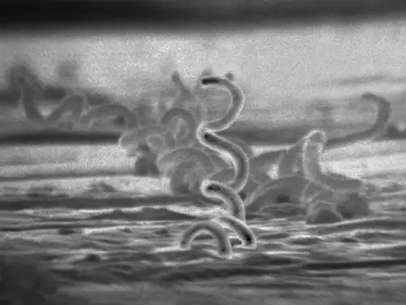
- Neisseria gonorrhoeae
- Chlamydia trachomatis
- Treponema pallidum
- Haemophilis ducreyi
Answer
C
23.4 Viral Infections of the Reproductive System¶
9. Genital herpes is most commonly caused by
- herpes simplex virus 1.
- varicella-zoster virus.
- herpes simplex virus 2.
- cytomegalovirus.
Answer
C
10. Koilocytes are characteristic of
- cells infected with human papillomavirus
- cells infected with herpes simplex virus 2
- cells infected with all forms of herpesviruses
- cervical cancer cells
Answer
A
23.5 Fungal Infections of the Reproductive System¶
11. Which oral medication is recommended as an initial topical treatment for genital yeast infections?
- penicillin
- acyclovir
- fluconazole
- miconazole
Answer
D
23.6 Protozoan Infections of the Urogenital System¶
12. What is the only common infection of the reproductive tract caused by a protozoan?
- gonorrhea
- chlamydia
- trichomoniasis
- candidiasis
Answer
C
13. Which test is preferred for detecting T. vaginalis because of its high sensitivity?
- NAAT
- wet mounts
- Pap tests
- all of the above are equally good
Answer
A
Fill in the Blank¶
23.1 Anatomy and Normal Microbiota of the Urogenital Tract¶
14. The genus of bacteria found in the vagina that is important in maintaining a healthy environment, including an acidic pH, is _____.
Answer
Lactobacillus
23.2 Bacterial Infections of the Urinary System¶
15. Pyelonephritis is a potentially severe infection of the _____.
Answer
kidneys
23.3 Bacterial Infections of the Reproductive System¶
16. Soft chancres on the genitals are characteristic of the sexually transmitted disease known as _____.
Answer
chancroid
23.4 Viral Infections of the Reproductive System¶
17. Condylomata are _____.
Answer
warts
23.5 Fungal Infections of the Reproductive System¶
18. The most common Candida species associated with yeast infections is _____.
Answer
C. albicans
23.6 Protozoan Infections of the Urogenital System¶
19. Trichomoniasis is caused by _____.
Answer
Trichomonas vaginalis
Short Answer¶
23.1 Anatomy and Normal Microbiota of the Urogenital Tract¶
20. When the microbial balance of the vagina is disrupted, leading to overgrowth of resident bacteria without necessarily causing inflammation, the condition is called _____.
Answer
vaginosis
21. Explain the difference between a sexually transmitted infection and a sexually transmitted disease.
Answer
An STI is a broader term, including colonization by organisms that may not necessarily cause disease.
22. In the figure shown here, where would cystitis occur?
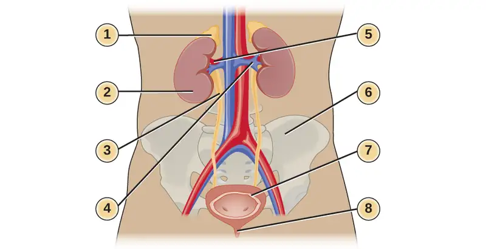
23.2 Bacterial Infections of the Urinary System¶
23. What is pyuria?
23.3 Bacterial Infections of the Reproductive System¶
24. Compare gonococcal and nongonoccocal urethritis with respect to their symptoms and the pathogens that cause each disease.
23.4 Viral Infections of the Reproductive System¶
25. Is it true that human papillomaviruses can always be detected by the presence of genital warts?
26. How is neonatal herpes transmitted?
23.6 Protozoan Infections of the Urogenital System¶
27. Name three organisms (a bacterium, a fungus, and a protozoan) that are associated with vaginitis.
Critical Thinking¶
23.1 Anatomy and Normal Microbiota of the Urogenital Tract¶
28. Epidemiological data show that the use of antibiotics is often followed by cases of vaginosis or vaginitis. Can you explain this finding?
23.2 Bacterial Infections of the Urinary System¶
29. What are some factors that would increase an individual’s risk of contracting leptospirosis?
23.3 Bacterial Infections of the Reproductive System¶
30. Chlamydia is often asymptomatic. Why might it be important for an individual to know if they were infected?
31. Why does the CDC recommend a two-drug treatment regimen to cover both C. trachomatis and N. gonorrhoeae if testing to distinguish between the two is not available? Additionally, how does the two-drug treatment regimen address antibiotic resistance?
23.4 Viral Infections of the Reproductive System¶
32. Recently, studies have shown a reduction in the prevalence of some strains of HPV in younger females. What might be the reason for this?
Adapted from Microbiology by OpenStax, licensed under CC BY 4.0. Access the original for free at openstax.org. Changes: converted to the web reading format of The Open Book Project.
-
World Health Organization. “Guidelines for the Management of Sexually Transmitted Infections.” World Health Organization, 2003. http://www.who.int/hiv/pub/sti/en/STIGuidelines2003.pdf. ↩
-
Tibor Fulop. “Acute Pyelonephritis” Medscape, 2015. http://emedicine.medscape.com/article/245559-overview. ↩
-
Centers for Disease Control and Prevention. “Leptospirosis.” 2015. http://www.cdc.gov/leptospirosis/health_care_workers. ↩
-
Ken B Waites. “Ureaplasma Infection Medication.” Medscape, 2015. http://emedicine.medscape.com/article/231470-medication. ↩
-
Centers for Disease Control and Prevention. “2015 Sexually Transmitted Diseases Treatment Guidelines: Gonococcal Infections,” 2015. http://www.cdc.gov/std/tg2015/gonorrhea.htm. ↩
-
Centers for Disease Control and Prevention. “Antibiotic Resistance Threats in the United States, 2013,” 2013. http://www.cdc.gov/drugresistance/pdf/ar-threats-2013-508.pdf. ↩
-
Centers for Disease Control and Prevention. “2015 Sexually Transmitted Diseases Treatment Guidelines: Chancroid,” 2015. http://www.cdc.gov/std/tg2015/chancroid.htm. ↩
-
Ibid. ↩
-
Centers for Disease Control and Prevention. “2014 Sexually Transmitted Disease Surveillance,” 2015. http://www.cdc.gov/std/stats14/default.htm. ↩
-
Catherine Lindsey Satterwhite, Elizabeth Torrone, Elissa Meites, Eileen F. Dunne, Reena Mahajan, M. Cheryl Bañez Ocfemia, John Su, Fujie Xu, and Hillard Weinstock. “Sexually Transmitted Infections Among US Women and Men: Prevalence and Incidence Estimates, 2008.” Sexually Transmitted Diseases 40, no. 3 (2013): 187–193. ↩
-
Centers for Disease Control and Prevention. “2015 Sexually Transmitted Disease Treatment Guidelines: Genital Herpes,” 2015. http://www.cdc.gov/std/tg2015/herpes.htm. ↩
-
Lauren Thaxton and Alan G. Waxman. “Cervical Cancer Prevention: Immunization and Screening 2015.” Medical Clinics of North America 99, no. 3 (2015): 469–477. ↩
-
Eileen F. Dunne, Elizabeth R. Unger, Maya Sternberg, Geraldine McQuillan, David C. Swan, Sonya S. Patel, and Lauri E. Markowitz. “Prevalence of HPV Infection Among Females in the United States.” Journal of the American Medical Association 297, no. 8 (2007): 813–819. ↩
-
Centers for Disease Control and Prevention. “Genital Herpes - CDC Fact Sheet,” 2015. http://www.cdc.gov/std/herpes/stdfact-herpes-detailed.htm. ↩
-
Centers for Disease Control and Prevention. “Trichomoniasis Statistics,” 2015. http://www.cdc.gov/std/trichomonas/stats.htm. ↩
-
Association of Public Health Laboratories. “Advances in Laboratory Detection of Trichomonas vaginalis,” 2013. http://www.aphl.org/AboutAPHL/publications/Documents/ID_2013August_Advances-in-Laboratory-Detection-of-Trichomonas-vaginalis.pdf. ↩